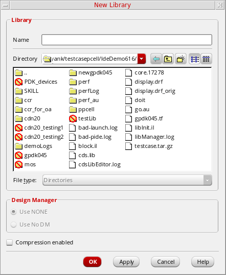

4
Copying Data
You can use Library Manager copy functions to assemble design and reference libraries by copying cells or views from libraries (specified in your cds.lib file) into other libraries.
prop.xx file is grayed-out and cannot be copied. Cell-level prop.xx files are not copied when you copy the cell. Copy commands can also fail if you have prop.xx files.The following topics are discussed:
Using the Copy Function
The Copy function opens the Copy Library, Copy Cell, Copy View, Copy Library File, or Copy Cell File form depending on what you have selected on the Library Manager form.
- Copy Library lets you copy a single library to a new library name (see “Copying a Library”, next).
- Copy Cell lets you copy a cell to a new cell name or into another library ( see “Copying a Cell”). You also have the option to copy cells hierarchically (see “Copying a Cell Hierarchy”).
- Copy View lets you copy a view to a new view name or into another cell or library (see “Copying a View”). You also have the option to copy views hierarchically (see “Copying a View Hierarchy”).
- Copy Library File lets you copy a single library file to a new name or a new library (see “Copying a Library File”).
- Copy Cell File lets you copy a single cell file to a new name, a new cell, or a new library (see “Copying a Cell File”).
Pre-Copy Checks
Certain checks are performed prior to copying data. The Library Manager invokes any pre-copy checks defined by applications.
To ensure technology database compatibility between source and destination libraries, the following checks are performed:
- Ensure that the names of files to be copied do not have a space in them. Files with names that have spaces will not be copied.
-
If the source library contains a local technology database file (
tech.dbfile), then check if the destination library associates with a technology database, either through attachment or by containing atech.dbfile in the library. If the destination library associates with a technology database, then the copy command is aborted. -
If the above check succeeds, then the following additional checks are performed for compatibility of design data:
-
Compatibility Check: Check for compatibility between the technology databases of the source and destination library and do the following:
- If the source and destination technology databases are equal, then proceed to the existence check.
- If the source technology database is a subset of the technology database of the destination library, then proceed to the existence check.
-
If there are any conflicts with a severity level of
“Error”between the technology databases, then abort the copy command. The following table lists the checking criteria:
- Existence Check: If the source technology database and the destination technology database are compatible, then check for the existence of technology objects in the destination technology database. If there are any missing technology objects for a cellview, that cellview is still copied and warning messages are issued.
-
Compatibility Check: Check for compatibility between the technology databases of the source and destination library and do the following:
Information about errors is displayed in the CIW. Modify your source data accordingly and then try to copy it again.
Copying a Library
To copy a library to another name, follow these steps:
- In the Library list box, select a library.
-
Choose Edit – Copy.
The Copy Library form appears (see “Copy Library Form”).

- In the To Library field, type a destination library name or select a library name from the drop-down list. You can type a new name or select an existing library.
-
(Optional) Select the Update Instances check box to update the cells and views in the destination library with the new library name.
The drop-down list to the right becomes active giving you the following choices:-
Of Entire Library: The software overwrites occurrences of the From Library name with the To Library name.
For example, all instances of…/oldLib/NAND/symbolare renamed to…/newLib/NAND/symbol. -
Of New Copies Only: The software overwrites only the cellview references you copied from the original library.
For example, only cellview instances of…/oldLib/NAND/symbolare renamed to…/newLib/NAND/symbol.
…/oldLib/NAND/symbolcontinue to reference the original library and remain…/oldLib/NAND/symbol. -
Of Entire Library: The software overwrites occurrences of the From Library name with the To Library name.
-
(Optional) Select the options in the Database Integrity field if you want to update and validate technology data in the destination library after the copy command is completed.
- Re-reference customViaDefs updates custom via definitions to point to cellviews in the destination library.
- Check existence in technology database validates the existence of layers, purposes, viaDefs, and siteDefs in the technology database of the destination library. Warnings, if any, are displayed in the CIW output.
- Click OK.
tech.db file, the source library's tech.db is not copied. Otherwise, while copying a source library to an existing library, the tech.db file associated with the source library will also be copied to the destination library.In case you selected an existing library, the Copy Problems form appears. See “Viewing and Resolving Copy Problems”.
addPropFiles, addLibPropFiles, and addCellPropFiles are set.Copying to a New Library
When you are copying to a new library and you click OK on the Copy Library form (see “Copying a Library”), the New Library form appears (see “New Library Form”). To complete the copy operation to a new library, do the following:
-
On the New Library form, use the Directory navigation tools (list box and toolbar buttons) to specify the destination directory into which you want to copy the new library. You can also type a directory path in the Directory field.
 -
In the Design Manager group box, specify a design management option (if one is available to you).
- Click OK.
Viewing and Resolving Copy Problems
When copying to an existing library, you click OK on the Copy Library form (see “Copying a Library”), the Copy Problems form appears listing the copy problems in a sortable table.

To resolve copy problems, do the following:
- In the Error column for each item, view the error.
-
(Optional) In the Action column for each item, select an action.
For example, the following actions are available for the Would Overwrite error:- Don’t Copy: Does not copy the item to the Destination Library.
- Overwrite: Writes the item to the Destination Library, overwriting the item of the same name.
- Auto Rename: Appends the From Cell name (if different) and the From Library name (if different), to the final cell name by adding an underscore prefix. If a destination cell with the same name already exists, an underscore and a number (for example, _01) is automatically added to the name.
- (Optional) Select one of the following options as an action for all items:
- Click OK.
The Copy Monitor status window is displayed.

The copy operation completes using the specified actions.
Copying a Cell
To copy a cell to another name or into another library, follow these steps:
- Select a cell.
-
Choose Edit – Copy.
The Copy Cell form appears (see “Copy Cell Form”).
The selected library and cell appear in the Library and Cell fields in the From group box. They also appear in the Library and Cell fields in the To group box. You can change any or all of these values.
You can set the maximum cell name length allowed by using theCDS_MAX_CELL_NAME_LENGTHenvironment variable. - To complete the copy cell operation, follow the steps for one of the following tasks:
Copying a Cell to Another Name in the Same Library
To copy a cell to another name in the same library, do the following:
- Follow the steps from “Copying a Cell”.
- In the To group box in the Cell field, type a destination cell name.
- Click OK.
The From cell name is copied to the To cell name in the same library.
- Copying a Cell Hierarchy
- Updating Cell Instances
- Validating Database Integrity
- Adding a Copied Cell to a Category
- Using Skip Libraries Together with Update Instances
Copying a Cell to Another Library
To copy a cell to another library, do the following:
- Follow the steps from “Copying a Cell”.
-
In the To group box in the Library field, type or select a destination library name.
You can type a new library name or select an existing library from the drop-down list. -
(Optional) In the To group box in the Cell field, type a destination cell name.
If you do not change the cell name in the To group box, the copied cell will have the same name as the original cell. - Click OK.
The From Cell is copied to the To Cell in the To Library. If the destination library does not already exist, the New Library form appears (see “Copying to a New Library”) so that you can specify a location (and design management option) for the new library.
- Copying a Cell Hierarchy
- Updating Cell Instances
- Validating Database Integrity
- Adding a Copied Cell to a Category
- Using Skip Libraries Together with Update Instances
Copying a Cell Hierarchy
To traverse the design hierarchy and copy all referenced cells in your design to the destination library, follow these steps:
-
In the Options group box, select the Copy Hierarchical check box.
-
By default, the Skip Libraries check box is also selected. When this check box is selected, cells in the named libraries are not copied and continue to reference their original library. You might want to skip libraries such as reference libraries of contacts, vias, and so on.
You can type the names or click the Edit button to open the Skip Libraries Editor dialog box as follows:- Click library names in the Skip list and click the move button in the center to move them to the Do not skip list.
-
Click OK.
cdsLibManager.copy skipLibsText string ”lib1 lib2”
-
To limit the search to your design’s exact hierarchy when collecting the cellview list for copying, select the Exact Hierarchy check box. When this check box is selected, only those cellviews found in the design hierarchy are included in the copy operation.
The Extra Views box becomes active. If you include additional view names or view types, the operation includes matching views found in your design hierarchy in the copy operation. If any of these matching views have their own hierarchies, those additional hierarchies are also included.
In the Names field, type the names of one or more space-separated views to copy. You can also type a valid filter string (for example,s*). Additionally, or optionally, use the Select button to select specific view types.

-
By default, the All Views check box is selected and the Views To Copy option appears deselected. If you leave this check box selected, the copy operation will copy all views of the specified cell. Further, if you copy the cell hierarchically, the copy operation also copies all views of cells instantiated in the specified cell.
To copy a particular set of views, follow these steps: - Click OK.
Updating Cell Instances
You can use the Update Instances check box in the Options group box on the Copy Cell form to update the instances in the destination library to use only the copied cells (instead of referencing the entire original library and cell names). If you leave the Update Instances check box unselected, references to the From Cell name are unchanged. For example, all instances of …/lib/oldCell/symbol continue to reference the original library and remain …/lib/oldCell/symbol.
To update instances in the destination cell to use only the copied cellviews, do the following:
-
In the Options group box on the Copy Cell form, select the Update Instances check box.
The drop-down list becomes active. -
From the drop-down list, select one of the following choices:
-
Of Entire Library: The software overwrites instances of the From Cell name with the To Cell name. For example, all instances of
…/lib/oldCell/symbolare renamed to…/lib/newCell/symbol. -
Of New Copies Only: The software overwrites only the cellview references you copied from the original library. For example, only cellview instances of
…/oldCell/symbolare renamed to…/newCell/symbol.
-
Of Entire Library: The software overwrites instances of the From Cell name with the To Cell name. For example, all instances of
- Click OK.
The Library Manager performs the specified copy operation.
Validating Database Integrity
You can select the options in the Database Integrity field if you want to update and validate technology data in the destination cell after the copy command is completed. You can do the following:
- Select Re-reference customViaDefs to update custom via definitions to point to cellviews in the destination library.
- Select Check existence in technology database to validate the existence of layers, purposes, viaDefs, and siteDefs in the technology database of the destination library. Warnings, if any, are displayed in the CIW output.
Adding a Copied Cell to a Category
To add a copied cell to a category, do the following:
-
Select the Add To Category check box.
The Add To Category and Cells fields become active. - In the Add To Category field, type a new or existing category name.
-
(Optional) In the Cells field, type a valid filter string against which to match the cell name that you want to add to the specified category.
By default, * appears in the Cells field, thus matching any copied cell name. - Click OK.
The copied cell is added to the specified category. If the category does not already exist, it is created. See Chapter 8, “Managing Categories” for more information about categories.
Using Skip Libraries Together with Update Instances
The following example shows what happens when you specify a reference library to be skipped in a hierarchical cell copy with the Update Instances option enabled.

Copying a View
To copy a view to another name or location, follow these steps:
- Select a view.
-
Choose Edit – Copy.
The Copy View form appears (see “Copy View Form”).
The selected library, cell, and view appear in the Library, Cell and View fields in the From group box. They also appear in the Library, Cell and View fields in the To group box. You can change any or all of these values.
- In the To group box, type the destination library, cell, and view names.
- To complete the copy view operation, follow the steps for one of the following tasks:
Copying a View to Another Name or Cell in the Same Library
Within the same library, you can
- Copy a view to another name for the same cell
- Copy a view to the same name for a different cell
- Copy a view to another name for a different cell
To copy a view to another name for the same cell in the same library, do the following:
- Follow the steps from “Copying a View”.
- In the To group box in the View field, type a destination view name.
- Click OK.
The From view name is copied to the To view name for the same cell in the same library.
To copy a view to the same name for a different cell in the same library, do the following:
- Follow the steps from “Copying a View”.
- In the To group box in the Cell field, type a destination cell name.
- Click OK.
The view is copied to the specified To cell name in the same library.
To copy a view to another name for a different cell in the same library, do the following:
- Follow the steps from “Copying a View”.
- In the To group box in the Cell field, type a destination cell name.
- In the To group box in the View field, type a destination view name.
- Click OK.
The From view name is copied to the specified To cell and view name in the same library.
Copying a View to Another Library
To copy a view to another library, do the following:
- Follow the steps from “Copying a View”.
-
In the To group box in the Library field, type or select a destination library name.
You can type a new library name or select an existing library from the drop-down list. -
(Optional) In the To group box in the Cell field, type a destination cell name.
If you do not change the cell name in the To group box, the copied cellview will have the same cell name as the original cell. -
(Optional) In the To group box in the View field, type a destination view name.
If you do not change the view name in the To group box, the copied view will have the same name as the original view. - Click OK.
The From cellview is copied to the To cellview in the To Library. If the destination library does not already exist, the New Library form appears (see “Copying to a New Library”) so that you can specify a location (and design management option) for the new library.
Copying a View Hierarchy
To traverse the design hierarchy and copy all views referenced in your design to the destination library, follow these steps:
-
In the Options group box, select the Copy Hierarchical check box.
-
By default, the Skip Libraries check box is also selected. When this check box is selected, cells in the named libraries are not copied and continue to reference their original library. You might want to skip libraries such as reference libraries of contacts, vias, and so on. You can add their names in the text box or click the Edit button to open the Skip Libraries Editor dialog box and select the libraries to skip.
Your .cdsenv file contains the list of libraries to include in the Skip Libraries field using the following format:cdsLibManager.copy skipLibsText string ”lib1 lib2”
-
To limit the search to your design’s exact hierarchy when collecting the cellview list for copying, select the Exact Hierarchy check box. When this check box is selected, only those cellviews found in the design hierarchy are included in the copy operation.
The Extra Views box becomes active. If you include additional view names or view types in this box, the search is expanded to include any matching views found in your design hierarchy in the copy operation. If any of these matching views have their own hierarchies, those additional hierarchies are also included.
In the Names field, type the names of one or more space-separated views to copy. You can also type a valid filter string (for example,s*).
Additionally, or optionally, use the Select button to select specific view types. -
The Views To Copy – All Views check box appears selected by default. The Views To Copy option appears deselected until you deselect the All Views check box. If you leave the check box selected, the copy operation will copy all views of the specified cell. Further, if you copy the cell hierarchically, the copy operation also copies all instantiated views.
To copy a particular set of views (instead of all views), follow these steps:-
Deselect the All Views check box.
The Views To Copy option becomes active. -
In the Names field, type the names of one or more space-separated views to copy. You can also type a valid filter string (for example,
s*).
Additionally, or optionally, use the Select button to select specific view types.
All referenced views that match a specified view name or selected view type are copied to the destination. -
Deselect the All Views check box.
Updating View Instances
You can use the Update Instances check box in the Options group box on the Copy View form to update the instances in the destination library to use only the copied views (instead of referencing the entire original library, cell, and view names). If you leave the Update Instances check box unselected, references to the From View name are unchanged. For example, all instances of …/oldLib/oldCell/symbol continue to reference the original library and remain …/oldLib/oldCell/symbol.
To update instances in the destination cell to use only the copied cellviews, do the following:
-
In the Options group box on the Copy Cell form, select the Update Instances check box.
The drop-down list becomes active. -
From the drop-down list, select one of the following choices:
-
Of Entire Library: The software overwrites instances of the From View name with the To View name. For example, all instances of
…/oldLib/oldCell/oldVieware renamed to…/newLib/newCell/newView. -
Of New Copies Only: The software overwrites only the cellview references you copied from the original library. For example, only cellview instances of
…/oldCell/oldVieware renamed to…/newCell/newView.
-
Of Entire Library: The software overwrites instances of the From View name with the To View name. For example, all instances of
- Click OK.
The Library Manager performs the specified copy operation.
Validating Database Integrity
You can select the options in the Database Integrity field if you want to update and validate technology data in the destination cellview after the copy command is completed. You can do the following:
- Select Re-reference customViaDefs to update custom via definitions to point to cellviews in the destination library.
- Select Check existence in technology database to validate the existence of layers, purposes, viaDefs, and siteDefs in the technology database of the destination library. Warnings, if any, are displayed in the CIW output.
Copying a Library File
To copy a library file, follow these steps:
-
Select a library file.
-
Choose Edit – Copy.
The Copy Library File form appears (see Copy Library File Form).
The selected library file appears in the Library and File fields in the From group box. It also appears in the Library and File fields in the To group box. You can change any or all of these values.
- To complete the copy library file operation, follow the steps for one of the following tasks:
Copying a Library File to Another Name in the Same Library
To copy a library file to another name in the same library, do the following:
- Follow the steps from “Copying a Library File”.
- In the To group box in the File field, type a destination file name.
- Click OK.
The From file name is copied to the To file name in the same library.
Copying a Library File to Another Library
To copy a library file to another library, do the following:
- Follow the steps from “Copying a Library File”.
-
In the To group box in the Library field, type or select a destination library name.
You can type a new library name or select an existing library from the drop-down list. -
(Optional) In the To group box in the File field, type a destination file name.
If you do not change the file name in the To group box, the copied file will have the same name as the original file. - Click OK.
The From File is copied to the To File in the To Library. If the destination library does not already exist, the New Library form appears (see “Copying to a New Library”) so that you can specify a location (and design management option) for the new library.
Copying a Cell File
To copy a cell file, follow these steps:
-
Select a cell file.
-
Choose Edit – Copy.
The Copy Cell File form appears (see “Copy Cell File Form”).
The selected cell file appears in the Library, Cell, and File fields in the From group box. It also appears in the Library, Cell, and File fields in the To group box. You can change any or all of these values. - To complete the copy cell file operation, follow the steps for one of the following tasks:
Copying a Cell File to Another Name or Cell in the Same Library
Within the same library, you can
- Copy a cell file to another name for the same cell
- Copy a cell file to the same name for a different cell
- Copy a cell file to another name for a different cell
To copy a cell file to another name for the same cell in the same library, do the following:
- Follow the steps from “Copying a Cell File”.
- In the To group box in the File field, type a destination cell file name.
- Click OK.
The From file name is copied to the To file name for the same cell in the same library.
To copy a cell file to the same name for a different cell in the same library, do the following:
- Follow the steps from “Copying a Cell File”.
- In the To group box in the Cell field, type a destination cell name.
- Click OK.
The cell file is copied to the specified To cell name in the same library.
To copy a cell file to another name for a different cell in the same library, do the following:
- Follow the steps from “Copying a Cell File”.
- In the To group box in the Cell field, type a destination cell name.
- In the To group box in the File field, type a destination cell file name.
- Click OK.
The From file name is copied to the specified To cell and file name in the same library.
Copying a Cell File to Another Library
To copy a cell file to another library, do the following:
- Follow the steps from “Copying a Cell File”.
-
In the To group box in the Library field, type or select a destination library name.
You can type a new library name or select an existing library from the drop-down list. -
(Optional) In the To group box in the Cell field, type a destination cell name.
If you do not change the cell name in the To group box, the copied cellview will have the same cell name as the original cell. -
(Optional) In the To group box in the File field, type a destination cell file name.
If you do not change the cell file name in the To group box, the copied file will have the same name as the original file. - Click OK.
The From cell file is copied to the To cell file in the To Library. If the destination library does not already exist, the New Library form appears (see “Copying to a New Library”) so that you can specify a location (and design management option) for the new library.
Using the Copy Wizard Form
Unlike the other copy forms, the Copy Wizard form lets you use the hierarchies in the configuration file of the Hierachy Editor to view, select, and edit individual cellviews you want to copy, instead of being constrained by standardized database hierarchies.
Like the other copy forms, the Copy Wizard form gives you the copy options of Simple, Hierarchical, Exact Hierarchy, By View, and By Configuration (see “Copy Wizard Form (By Configuration)”). See
- “Performing a Simple Copy” for information on using the Simple tab to specify the libraries, cells, and views to copy
- “Copying a Hierarchy” for information on using the Hierarchical tab to specify a hierarchical design (a hierarchy of libraries, cells, and views) or part of a hierarchical design to copy
- “Copying an Exact Hierarchy” for information on using the Exact Hierarchy tab to specify an exact hierarchy to copy
- “Copying by View” for information on using the By View tab to specify particular views to copy
- “Copying by Configuration” for information on using the By Configuration tab to specify a previously defined configuration of cells to copy
Selecting Text in the Copy Wizard
You can use the Copy Wizard feature to select or deselect items for editing and to select items for copying. The following tasks are described:
- Selecting Items for Editing in the Copy Wizard
- Deselecting Items for Editing in the Copy Wizard
- Selecting Items for Copying in the Copy Wizard
Selecting Items for Editing in the Copy Wizard
The Copy Wizard table automatically selects multiple cell items that need to be updated whenever a To Cell (destination) entry is selected for editing. It selects all the rows that specify the views and files of the associated From Cell (source) and changes their To Cell values together.
You can select for editing in the following ways:
- To select a single library, cell, or view, click the item name.
- To select more than one contiguous item in a row, click and drag the cursor across all the items.
- To select more than one item in a column, do one of the following:
-
To select more than one item not in the same row or column, hold the
Ctrlkey and click each item. See also “Deselecting Items for Editing in the Copy Wizard”. Any item not already selected is added to the selection set.
To edit the selected items, see “Editing Text in the Copy Wizard”. For more information about the Copy Wizard form, see “Using the Copy Wizard Form”.
Deselecting Items for Editing in the Copy Wizard
To deselect a selected library, cell, or view, do the following:
To deselect a single item in a group of selected items, do the following:
To deselect an entire selected column, do the following:
Selecting Items for Copying in the Copy Wizard
Each row in the Copy Wizard represents a cellview or a cell file. A selected check box indicates a selected row.
To select or deselect a cellview for copying (not for editing), do the following:
To select all items for copying, do the following:
To remove all items from the selection set, do the following:
Editing Text in the Copy Wizard
You can edit text on the Copy Wizard form in the following ways:
- One item at a time (see “Editing a Single Item”, next)
- All items in a selected set of items at the same time (see “Editing All Items in a Selected Set”)
- All items in a selected column (see “Editing All Items in a column”)
Editing a Single Item
To change a library, cell, or view name, do the following:
-
Click the item name.
The item is highlighted.
- Place the cursor where you want to add or delete text, or drag the cursor across the text to highlight it.
- Type your changes.
-
Press
Return.
Editing All Items in a Selected Set
To change all items a selected set, do the following:
-
Select all the items you want to change (see “Selecting Items for Editing in the Copy Wizard”).
-
Type your changes.
Only the last item added to the selection set reflects your changes. -
Press
Enter.
Your edits appear for all selected items.
Editing All Items in a column
To copy text from one item to all items in the same column, do the following:
-
Right-click the item you want to copy.
The pop-up menu appears.
-
Choose Select column.
All items in the column are selected.
- Type your changes.
- Right-click in the column to display the pop-up menu.
- Choose Apply Changes.
Your changes are applied to all items in the selected column.
Performing a Simple Copy
To perform a simple copy operation, follow these steps:
- In the Library Manager window, select a library, cell, or view.
-
Choose Edit – Copy Wizard.
The Copy Wizard form appears. The default copy option is Simple.
If you selected only a library, all cells and views associated with this library appear in the Copy Wizard window.
If you selected a library and a cell, all views associated with this library and cell appear in the Copy Wizard window.
If you selected a library, cell, and view, information for the selected cellview only appears in the Copy Wizard window. -
(Optional) Deselect the check box to the left of any item you do not want to include in the copy list.
-
Change one or more of the following to specify your copy operation:
-
In the Destination Library field, type or select a new destination library name to copy the selected cellviews to a different library.
If the destination library does not already exist, Library Manager creates it in your working directory during the copy procedure. - In the To Cell list box, edit the contents to copy the selected cellviews to another name.
- In the To View list box, edit the contents to copy the selected views to another name.
For information about editing and copying using the Copy Wizard, see “Editing Text in the Copy Wizard”. -
In the Destination Library field, type or select a new destination library name to copy the selected cellviews to a different library.
-
(Optional) Select the Update Instances check box and select one of the following choices from the drop-down list:
-
Of Entire Library: The software overwrites instances of the old (library, cell, and view) name with the new name. For example, all instances of
…/oldLib/oldCell/oldVieware renamed to…/newLib/newCell/newView. -
Of New Copies Only: The software overwrites only the cellview references you copied from the original library. For example, only cellview instances of
…/oldCell/oldVieware renamed to…/newCell/newView.
-
Of Entire Library: The software overwrites instances of the old (library, cell, and view) name with the new name. For example, all instances of
-
(Optional) Select the options in the Database Integrity field if you want to update technology data in the destination library after the copy command is completed.
- Re-reference customViaDefs updates custom via definitions to point to cellviews in the destination library.
- Check existence in technology database validates the existence of layers, purposes, viaDefs, and siteDefs in the technology database of the destination library. Warnings, if any, are displayed in the CIW output.
- (Optional) See “Adding a Copied Cell to a Category” for information on adding the copied cells to a category.
-
(Optional) Click Check Files to preview any copy problems.
Any problems appear on the Copy Problems form.
When there are no problems, the Check is OK prompt appears. Click OK to dismiss the prompt and return to the Copy Wizard window. - Click OK.
The Library Manager performs the specified copy operation.
Copying a Hierarchy
To copy a hierarchy of libraries, cells, and views into another library, follow these steps:
- Select a library, cell, or view.
-
Choose Edit – Copy Wizard.
The Copy Wizard form appears. -
Select the Hierarchical tab.
- The selected library name appears in the Top Library field.
- If you selected a cell, the cell name appears in the Top Cell field.
- If you selected a view, the view name appears in the Views To Copy – Names field.
You can change any or all of these values. -
If the Top Cell field is empty, type a valid cell name.
If the Views To Copy – Names field is empty, type one or more (space-separated) names of views to copy. You can also type a valid filter string. For example,s*(to indicate all view names beginning with s) or*(to indicate all views). Alternatively, or optionally, use the Select button to select specific view types. . -
(Optional) In the Skip Libraries field, add or remove names of any libraries whose cellviews you want to skip or to copy into the destination library. Alternatively, click the Edit button to open the Skip Libraries Editor dialog box and select the libraries to skip.
Cellviews in the libraries named in the Skip Libraries field are not copied and continue to reference their original library. (You probably want to skip libraries such as reference libraries of contacts, vias, and so forth.) Your .cdsenv file contains the list of libraries to include in the Skip Libraries field using the following format:cdsLibManager.copyWizard skipLibsText string ”lib1 lib2”
-
Click Generate Copy List.
The cellviews to copy appear in the copy list. By default, all cellviews are selected for copying. See also “Selecting Text in the Copy Wizard”. -
In the View File Summary window, click Yes.
The list of cellviews not included in the copy list appear on the Referenced Files form. -
(Optional) If you want to move one or more of the referenced files to the copy list, do one of the following:
- In the Copy list box, click No to change the entry to Yes for each referenced file you want to move to the copy list, then click OK.
- Click Copy All Files to move all referenced files to the copy list.
The specified cellviews appear in the copy list on the Copy Wizard form. - (Optional) In the Destination Library field, type or select a new destination library name to copy the selected cellviews to a different library.
-
(Optional) Select the Update Instances check box and select one of the following choices from the drop-down list:
-
Of Entire Library: The software overwrites instances of the old (library, cell, and view) name with the new name. For example, all instances of
…/oldLib/oldCell/oldVieware renamed to…/newLib/newCell/newView. -
Of New Copies Only: The software overwrites only the cellview references you copied from the original library. For example, only cellview instances of
…/oldCell/oldVieware renamed to…/newCell/newView.
-
Of Entire Library: The software overwrites instances of the old (library, cell, and view) name with the new name. For example, all instances of
-
(Optional) Select the options in the Database Integrity field if you want to update and validate technology data in the destination library after the copy command is completed.
- Re-reference customViaDefs updates custom via definitions to point to cellviews in the destination library.
- Check existence in technology database validates the existence of layers, purposes, viaDefs, and siteDefs in the technology database of the destination library. Warnings, if any, are displayed in the CIW output.
- (Optional) See “Adding a Copied Cell to a Category” for information on adding the copied cells to a category.
- Click OK.
Library Manager copies the cells in the copy list to the destination library. If the destination library is the same as the top library, Library Manager copies the cells or views to the new names you specified.
If the destination library does not already exist, the New Library form appears (see “Copying to a New Library”) so that you can specify a location (and design management option) for the new library.
Copying an Exact Hierarchy
To copy an exact hierarchy of libraries, cells, and views into another library (such that only those cellviews found in the design hierarchy are included in the copy operation), follow these steps:
- Select a library, cell, or view.
-
Choose Edit – Copy Wizard.
The Copy Wizard form appears. -
Select the Exact Hierarchy tab.
- The selected library name appears in the Top Library field.
- If you selected a cell, the cell name appears in the Top Cell field.
- If you selected a view, the view name appears in the Top View field.
You can change any or all of these values. - If the Top Cell field is empty, type a valid cell name.
- If the Top View field is empty, type a valid view name or a list of names separated by spaces.
-
(Optional) In the Extra Views – Names, specify additional space-separated view names or expressions to expand the search to include any matching views found in your design hierarchy in the copy operation. You can also type a valid filter string (for example,
s*).
Additionally, or optionally, use the Select button to select specific view types. -
(Optional) In the Skip Libraries field, add or remove names of any libraries whose cellviews you want to skip or to copy into the destination library. Alternatively, click the Edit button to open the Skip Libraries Editor dialog box and select the libraries to skip.
Cellviews in the libraries named in the Skip Libraries field are not copied and continue to reference their original library. (You might want to skip libraries such as reference libraries of contacts, vias, and so forth.) Your .cdsenv file contains the list of libraries to include in the Skip Libraries field using the following format:cdsLibManager.copyWizard skipLibsText string ”lib1 lib2”
-
Click Generate Copy List.
The cellviews to copy appear in the copy list. By default, all cellviews are selected for copying. See also “Selecting Items for Copying in the Copy Wizard”. -
In the View File Summary window, click Yes.
The list of cellviews not included in the copy list appear on the Referenced Files form. -
(Optional) On the Referenced Files form, do one of the following if you want to move one or more of the referenced files to the copy list:
- In the Copy list box, click No to change the entry to Yes for each referenced file you want to move to the copy list, then click OK.
- Click Copy All Files to move all referenced files to the copy list.
The specified cellviews appear in the copy list on the Copy Wizard form. - (Optional) In the Destination Library field, type or select a new destination library name to copy the selected cellviews to a different library.
-
(Optional) Select the Update Instances check box and select one of the following choices from the drop-down list:
-
Of Entire Library: The software overwrites instances of the old (library, cell, and view) name with the new name. For example, all instances of
…/oldLib/oldCell/oldVieware renamed to…/newLib/newCell/newView. -
Of New Copies Only: The software overwrites only the cellview references you copied from the original library. For example, only cellview instances of
…/oldCell/oldVieware renamed to…/newCell/newView.
-
Of Entire Library: The software overwrites instances of the old (library, cell, and view) name with the new name. For example, all instances of
-
(Optional) Select the options in the Database Integrity field if you want to update and validate technology data in the destination library after the copy command is completed.
- Re-reference customViaDefs updates custom via definitions to point to cellviews in the destination library.
- Check existence in technology database validates the existence of layers, purposes, viaDefs, and siteDefs in the technology database of the destination library. Warnings, if any, are displayed in the CIW output.
- (Optional) See “Adding a Copied Cell to a Category” for information on adding the copied cells to a category.
- Click OK.
Library Manager copies the cells in the copy list to the destination library. If the destination library is the same as the top library, Library Manager copies the cells or views to the new names you specified.
If the destination library does not already exist, the New Library form appears (see “Copying to a New Library”) so that you can specify a location (and design management option) for the new library.
Copying by View
To copy only specific views to a different library, follow these steps:
- Select a library.
-
Choose Edit – Copy Wizard.
The Copy Wizard appears. -
Select the By View tab.
- The selected library name appears in the Library field.
- If you selected a cell, the cell name appears in the Cell Filter field.
- An asterisk appears in the Names field in Views To Copy.
You can change any or all of these values. -
In the Cell Filter field, type the name of the cell you want to copy.
You can type a specific cell name or a character string to filter patterns in cell names, such ascc*or*a2d. -
In the Views To Copy – Names field, specify the names of the views you want to copy. You can type a specific view name or a character string to filter patterns in view names, such as
s*.
Alternatively, or optionally, use the Select button to select specific view types. -
Click Generate Copy List.
The cellviews that match the cell and view filter strings appear in the copy list. Cell files are not affected by the Views To Copy filter, so all cell files are included in the copy list. By default, all items are selected for copying. See also “Selecting Items for Copying in the Copy Wizard”. - (Optional) In the Destination Library field, type or select a new destination library name to copy the selected cellviews to a different library.
-
(Optional) Select the Update Instances check box and select one of the following choices from the drop-down list:
-
Of Entire Library: The software overwrites instances of the old (library, cell, and view) name with the new name. For example, all instances of
…/oldLib/oldCell/oldVieware renamed to…/newLib/newCell/newView. -
Of New Copies Only: The software overwrites only the cellview references you copied from the original library. For example, only cellview instances of
…/oldCell/oldVieware renamed to…/newCell/newView.
-
Of Entire Library: The software overwrites instances of the old (library, cell, and view) name with the new name. For example, all instances of
-
(Optional) Select the options in the Database Integrity field if you want to update technology data in the copied library after the copy command is completed.
- Re-reference customViaDefs updates custom via definitions to point to cellviews in the destination library.
- Check existence in technology database validates the existence of layers, purposes, viaDefs, and siteDefs in the technology database of the destination library. Warnings, if any, are displayed in the CIW output.
- (Optional) See “Adding a Copied Cell to a Category” for information on adding the copied cells to a category.
- Click OK.
Library Manager copies the cells in the copy list to the destination library. If the destination library is the same as the top library, Library Manager copies the cells or views to the new names you specified.
If the destination library does not already exist, the New Library form appears (see “Copying to a New Library”) so that you can specify a location (and design management option) for the new library.
Copying by Configuration
To copy cells in a configuration file to another library, follow these steps:
- Select the item you want to copy.
-
Choose Edit – Copy Wizard.
The Copy Wizard form appears. -
Select the By Configuration tab.
- The selected library name appears in the Library field.
- If you selected a cell, the cell name appears in the Cell field.
- If you selected a configuration view, the view name appears on the Config View field.
You can change any or all of these values. - If the Cell field is empty, type a valid cell name.
-
If the Config View field is empty, type a valid configuration view name.
(Optional) In the Skip Libraries field, add or remove names of any libraries whose configuration you want to skip or to copy into the destination library. Alternatively, click the Edit button to open the Skip Libraries Editor dialog box and select the libraries to skip.
Configuration views in the libraries named in the Skip Libraries field are not copied and continue to reference their original library. You might want to skip libraries such as reference libraries of contacts, vias, and so on. Your .cdsenv file contains the list of libraries to include in the Skip Libraries field using the following format:cdsLibManager.copyWizard skipLibsText string ”lib1 lib2”
-
Click Generate Copy List.
The configuration views to copy appear in the copy list. By default, all items are selected for copying. See also “Selecting Items for Copying in the Copy Wizard”. - (Optional) In the Destination Library field, type or select a new destination library name to copy the selected configuration views to a different library.
-
(Optional) Select the Update Instances check box and select one of the following choices from the drop-down list:
-
Of Entire Library: The software overwrites instances of the old (library, cell, and view) name with the new name. For example, all instances of
…/oldLib/oldCell/oldVieware renamed to…/newLib/newCell/newView. -
Of New Copies Only: The software overwrites only the view references you copied from the original library. For example, only view instances of
…/oldCell/oldVieware renamed to…/newCell/newView.
-
Of Entire Library: The software overwrites instances of the old (library, cell, and view) name with the new name. For example, all instances of
-
(Optional) Select the options in the Database Integrity field if you want to update technology data in the destination library after the copy command is completed.
- Re-reference customViaDefs updates custom via definitions to point to cellviews in the destination library.
- Check existence in technology database validates the existence of layers, purposes, viaDefs, and siteDefs in the technology database of the destination library. Warnings, if any, are displayed in the CIW output.
- (Optional) See “Adding a Copied Cell to a Category” for information on adding the copied cells to a category.
- Click OK.
Library Manager copies the cells in the copy list to the destination library. If the destination library is the same as the top library, Library Manager copies the cells or views to the new names you specified.
If the destination library does not already exist, the New Library form appears (see “Copying to a New Library”) so that you can specify a location (and design management option) for the new library.
Setting Copy and Rename Preferences
To set preferences for copy and rename operations, do the following:
-
Choose Edit – Copy Preferences.
The Copy Preferences form is displayed.

- Choose one of the following Library and Cell Property Files settings, which apply to copy operations only:
- Choose one of the following Cellview Contents settings, which apply to copy operations only:
-
Choose one of the following Remote Copy Service settings, which apply to both copy and rename operations:
- Use session’s Copy service when available
-
Use Library Manager local Copy engine onlyFor more information about remote copy services, see the description of
cdsLibManager.copyGlobals mpsRadio togglein “Using UNIX to Add Settings to .cdsenv”.
- Choose Miscellaneous Settings:
Return to top